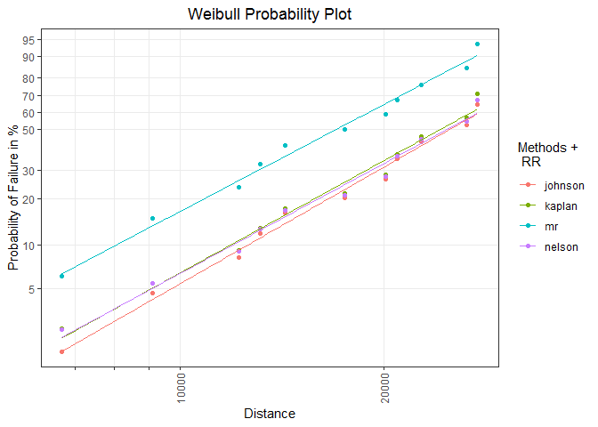

Overview
The weibulltools package focuses on statistical methods and visualizations that are often used in reliability engineering. It provides a compact and easily accessible set of methods and visualization tools that make the examination and adjustment as well as the analysis and interpretation of field data (and bench tests) as simple as possible.
Besides the well-known weibull analysis, the package supports multiple lifetime distributions and also contains Monte Carlo methods for the correction and completion of imprecisely recorded or unknown lifetime characteristics.
Plots are created statically (ggplot2) or interactively (plotly) and can be customized with functions of the respective visualization package.
Installation
The latest released version of weibulltools from CRAN can be installed with:
install.packages("weibulltools")Development version
Install the development version of weibulltools from GitHub to use new features or to get a bug fix.
# install.packages("devtools")
devtools::install_github("Tim-TU/weibulltools")Usage
Getting started
Create consistent reliability data with columns:
-
x- lifetime characteristic
-
status- binary data (0 for censored units and 1 for failed units) -
id(optional) - identifier for units
library(weibulltools)
rel_tbl <- reliability_data(data = shock, x = distance, status = status)
rel_tbl
#> Reliability Data:
#> # A tibble: 38 x 3
#> x status id
#> <int> <dbl> <chr>
#> 1 6700 1 ID1
#> 2 6950 0 ID2
#> 3 7820 0 ID3
#> 4 8790 0 ID4
#> 5 9120 1 ID5
#> # ... with 33 more rowsProbability estimation and visualization
Estimation of failure probabilities using different non-parametric methods:
prob_tbl <- estimate_cdf(x = rel_tbl, methods = c("mr", "kaplan", "johnson", "nelson"))
#> The 'mr' method only considers failed units (status == 1) and does not retain intact units (status == 0).
prob_tbl
#> CDF estimation for methods 'mr', 'kaplan', 'johnson', 'nelson':
#> # A tibble: 125 x 6
#> id x status rank prob method
#> <chr> <int> <dbl> <dbl> <dbl> <chr>
#> 1 ID1 6700 1 1 0.0614 mr
#> 2 ID5 9120 1 2 0.149 mr
#> 3 ID13 12200 1 3 0.237 mr
#> 4 ID15 13150 1 4 0.325 mr
#> 5 ID19 14300 1 5 0.412 mr
#> # ... with 120 more rowsVisualization of the obtained results in a distribution-specific probability plot:
prob_vis <- plot_prob(x = prob_tbl, distribution = "weibull",
title_main = "Weibull Probability Plot",
title_x = "Distance",
title_y = "Probability of Failure in %",
title_trace = "Methods",
plot_method = "gg")
prob_vis
Model estimation and visualization
Parametric model estimation with respect to the used methods:
rr_list <- rank_regression(x = prob_tbl, distribution = "weibull")
rr_list
#> List of 4 model estimations:
#> Rank Regression
#> Coefficients:
#> mu sigma
#> 10.2596 0.3632
#> Method of CDF Estimation: johnson
#>
#> Rank Regression
#> Coefficients:
#> mu sigma
#> 10.2333 0.3773
#> Method of CDF Estimation: kaplan
#>
#> Rank Regression
#> Coefficients:
#> mu sigma
#> 9.8859 0.3956
#> Method of CDF Estimation: mr
#>
#> Rank Regression
#> Coefficients:
#> mu sigma
#> 10.2585 0.3852
#> Method of CDF Estimation: nelsonModel visualization in an existing probability plot:
mod_vis <- plot_mod(p_obj = prob_vis, x = rr_list, distribution = "weibull",
title_trace = "RR")
mod_vis
Getting help
If you notice a bug or have suggestions for improvements, please submit an issue with a minimal reproducible example on GitHub. For further questions, please contact Tim-Gunnar Hensel.